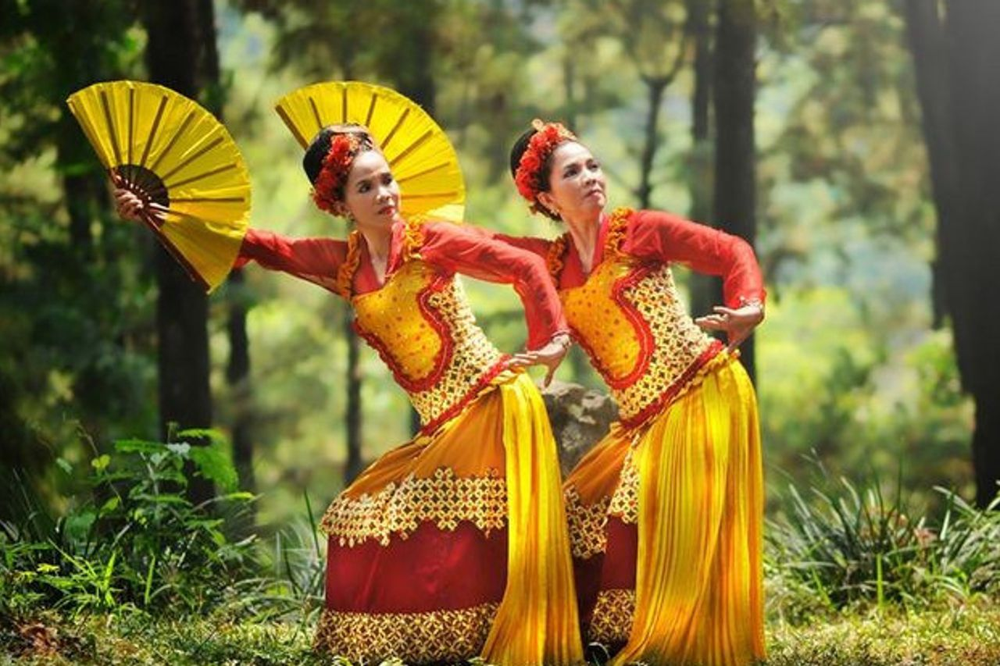

1. Tari Pendet (Bali)
Tari Pendet awalnya adalah tarian upacara untuk penyambutan dewata dalam kepercayaan Hindu Bali. Seiring waktu, tari ini berkembang menjadi tari penyambutan tamu yang lebih umum.

2. Tari Saman (Aceh)
Tari Saman dikenal dengan gerakan cepat dan kompak yang dilakukan oleh banyak penari duduk berbaris. Tarian ini diciptakan oleh Syekh Saman dan digunakan sebagai media dakwah serta penyampaian pesan.

3. Tari Jaipong (Jawa Barat)
Tari Jaipong berasal dari Karawang dan Bandung. Tarian ini muncul pada tahun 1970-an sebagai gabungan dari ketuk tilu, pencak silat, dan musik tradisional Sunda.
